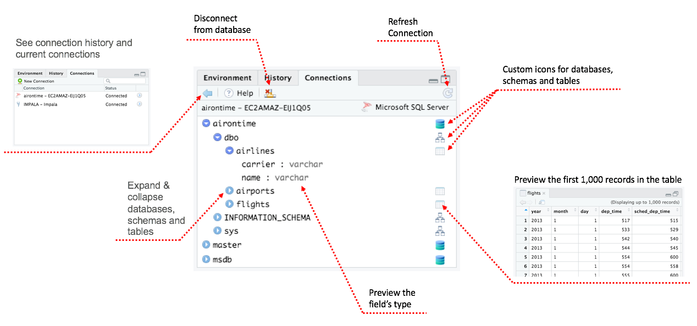
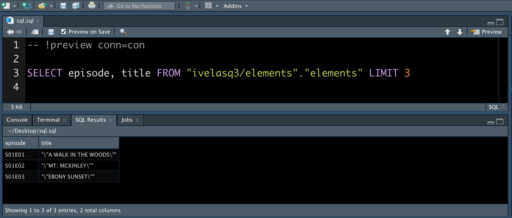
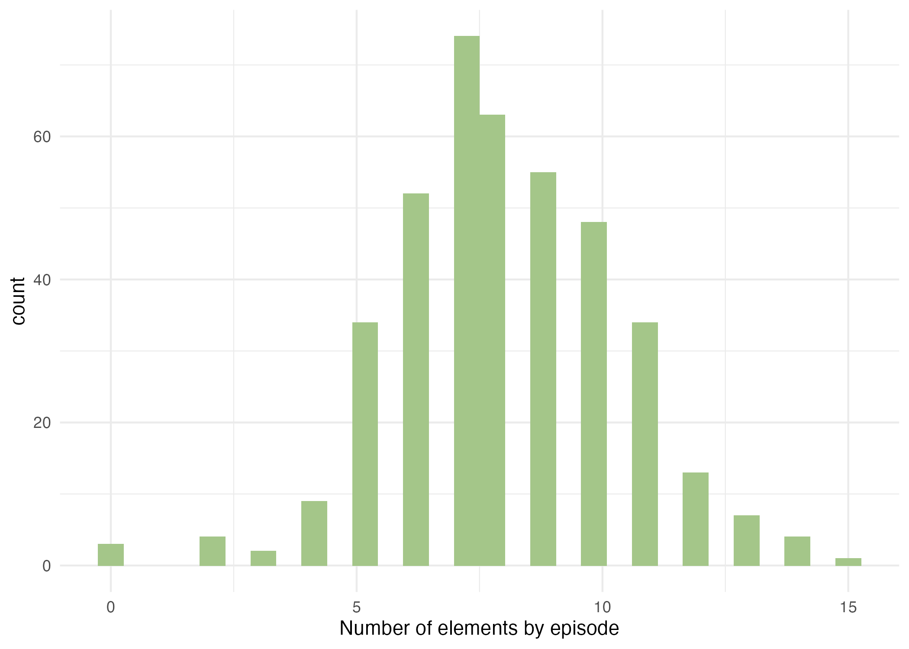

2022-02-17
Photo by Conny Schneider on Unsplash
Relational databases are a common way to store information, and SQL is a widely-used language for managing data held in these systems. RStudio provides several options to work with these crucial tools.
Let’s explore using a PostgreSQL database that contains FiveThirtyEight’s data on Bob Ross paintings.
You can connect to databases in RStudio, either by manually writing the connection code or using the Connections Pane.
Install the packages that correspond to your database. For example, you can connect to a bit.io PostgreSQL database by creating an account and inserting the repo’s details in a code chunk:
```{r}
# Install these packages if you have not already
# install.packages(c('DBI', 'RPostgres'))
con <- DBI::dbConnect(
RPostgres::Postgres(),
dbname = 'ivelasq3',
host = 'db.bit.io',
port = 5432,
user = 'ivelasq3_demo_db_connection',
password = Sys.getenv('BITIO_KEY') # insert your password here
)
```In addition to manually writing code, you can connect to databases with the Connections Pane in the IDE. It shows all the connections to supported data sources. You can also scan through your databases, see which connections are currently active, and close connections.

For RStudio commercial customers, we offer RStudio Professional ODBC Drivers. These are ODBC data connectors that help you connect to some of the most popular databases and use them in a production environment.
Once you have your connection set up, you can run database queries in RStudio. There are several ways of doing this. Let’s explore RStudio’s SQL integration, the DBI package, the dbplyr package, and R Markdown.
The RStudio IDE has direct integration with .sql files. You can open, edit, and test those file types inside RStudio.
Generate a .sql file with your open connection (or go to File, New File, SQL Script) and start writing your query.
Notice that there’s a comment RStudio added to the top of the file:
```{r}
-- !preview conn=con
```This comment tells RStudio to execute the query against the open connection named con. Click Preview or press Ctrl + Shift + Enter to run the query, and your results appear in a new tab:

You can query your data with the DBI::dbGetQuery() function. Paste your SQL code as a quoted string. Using the example database from earlier, let’s query the first three rows of the elements table:
```{r}
DBI::dbGetQuery(con, 'SELECT episode, title FROM \"ivelasq3/elements\".\"elements\" LIMIT 3')
``` episode title
1 S01E01 "\\"A WALK IN THE WOODS\\""
2 S01E02 "\\"MT. MCKINLEY\\""
3 S01E03 "\\"EBONY SUNSET\\""The glue package package makes writing SQL queries a little easier. The glue::glue_sql() function is able to handle the SQL quoting and variable placement:
```{r}
tbl_glue <-
glue::glue_sql('SELECT episode, title FROM "ivelasq3/elements"."elements" LIMIT 3')
DBI::dbGetQuery(con, tbl_glue)
``` episode title
1 S01E01 "\\"A WALK IN THE WOODS\\""
2 S01E02 "\\"MT. MCKINLEY\\""
3 S01E03 "\\"EBONY SUNSET\\""You can write your queries with dplyr syntax using the dbplyr package.
```{r}
library(dplyr)
tbl_dbplyr <-
tbl(con, dbplyr::ident_q('"ivelasq3/elements"."elements"'))
```The dbplyr package translates dplyr verbs into SQL queries, making it easy to work with the data from your database.
```{r}
tbl_dbplyr %>%
summarise(total = n())
```# Source: lazy query [?? x 1]
# Database: postgres [ivelasq3_demo_db_connection@db.bit.io:5432/ivelasq3]
total
<int64>
1 403You can always inspect the SQL translation with the show_query() function. The dbplyr package will switch between SQL syntaxes based on the DB type (e.g., MS, Oracle, PG, etc.).
```{r}
tbl_dbplyr %>%
summarise(total = n()) %>%
show_query()
```<SQL>
SELECT COUNT(*) AS "total", TRUE AS "na.rm"
FROM "ivelasq3/elements"."elements"The dbplyr package allows you to work iteratively like you would in dplyr. All of your code is in R so you do not have to switch between languages to explore the data.
```{r}
tbl_dbplyr2 <-
tbl_dbplyr %>%
mutate(night_and_ocean =
case_when(night == 1 & ocean == 1 ~ 1,
TRUE ~ 0))
tbl_dbplyr2 %>%
summarise(night_sum = sum(night),
ocean_sum = sum(ocean),
night_and_ocean_sum = sum(night_and_ocean))
```# Source: lazy query [?? x 3]
# Database: postgres [ivelasq3_demo_db_connection@db.bit.io:5432/ivelasq3]
night_sum ocean_sum night_and_ocean_sum
<dbl> <dbl> <dbl>
1 11 36 4Using the function collect(), we can then use our data with other functions or R packages such as ggplot2.
```{r}
library(ggplot2)
tbl_ggplot <-
tbl_dbplyr %>%
collect() %>%
rowwise() %>%
mutate(total_number =
as.numeric(sum(c_across(where(is.numeric))))) %>%
ggplot(aes(total_number)) +
geom_histogram(fill = "#A4C689") +
theme_minimal() +
xlab("Number of elements by episode")
```
Would you rather write verbatim SQL code? You can run SQL code in an R Markdown document. Create a sql code chunk and specify your connection with the connection = con code chunk option.
```{sql}
#| connection = con
SELECT episode, title
FROM "ivelasq3/elements"."elements"
LIMIT 3
```| episode | title |
|---|---|
| S01E01 | ““A WALK IN THE WOODS”” |
| S01E02 | ““MT. MCKINLEY”” |
| S01E03 | ““EBONY SUNSET”” |
R Markdown provides options that simplify using SQL with R. For example, this post shows how you can use the cat engine to write the content of a chunk to a file.
```{cat}
#| engine.opts = list(file = "select_tbl.sql", lang = "sql")
SELECT episode, title
FROM "ivelasq3/elements"."elements"
LIMIT 3
```You can read in the file using the code chunk option so you do not have to write out your SQL query.
```{sql}
#| connection = con, code=readLines("select_tbl.sql")
```You can send the query output to an R data frame by defining output.var in the code chunk. Then you can reuse that data frame elsewhere in your code.
```{sql}
#| connection = con,
#| code=readLines("select_tbl.sql"),
#| output.var = "dat"
``````{r}
print(dat)
``` episode title
1 S01E01 "\\"A WALK IN THE WOODS\\""
2 S01E02 "\\"MT. MCKINLEY\\""
3 S01E03 "\\"EBONY SUNSET\\""These options make working with SQL in R Markdown even smoother.
This blog post just touched on a few examples of how to work with databases and SQL in RStudio. Check out more resources below.